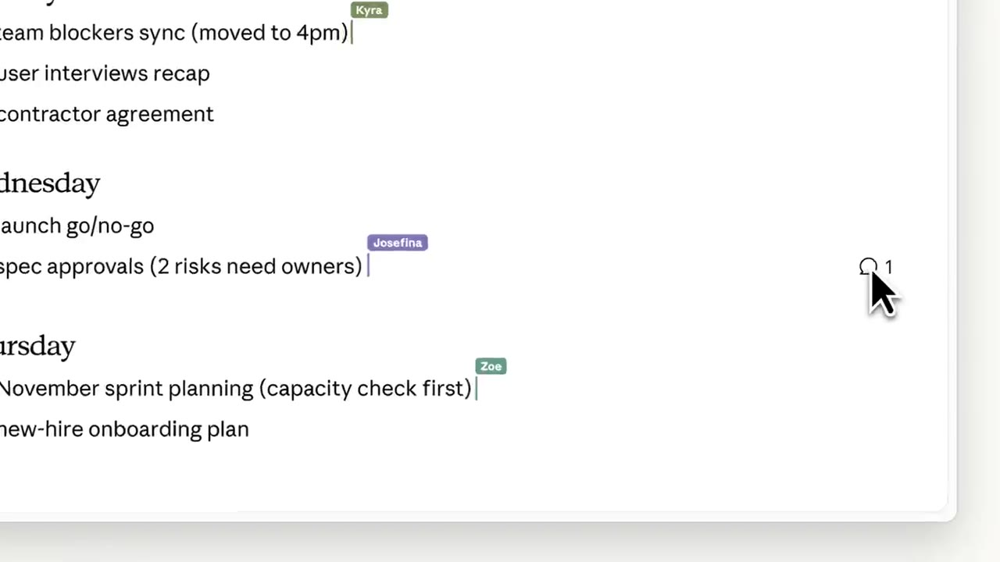
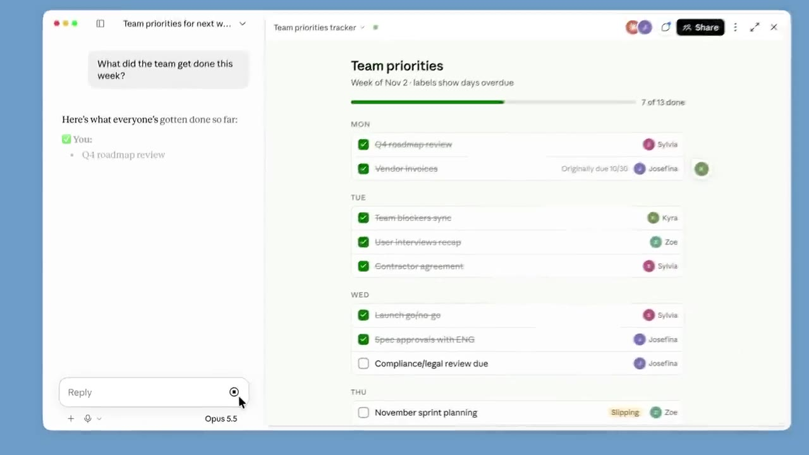

Collaborate on artifacts in Claude
▶ 원본 영상 보기한눈에 보기
- Claude에서 만든 문서·추적기·대시보드 같은 아티팩트를 팀원과 공유하면, 파일을 주고받지 않고 Claude 안에서 함께 보고 수정할 수 있다.
- 팀원마다 보기, 댓글 작성, 기여, 편집 권한을 따로 줄 수 있고, 기본값은 댓글 작성자다.
- 기여자 권한은 추적기 구조는 못 바꾸게 하면서 정보 입력과 작업 완료 표시만 허용한다.
- 댓글이 달리면 Claude에게 업데이트를 요청할 수 있고, Claude는 내용·상태는 그대로 두고 콘텐츠나 스타일을 바꾼다.
- 아티팩트 탭에서 템플릿으로 시작하거나 공유받은 아티팩트를 다시 열어 "이번 주에 팀이 완료한 일은?" 같은 질문도 할 수 있다.
이런 분께 도움이 됩니다
- 팀 회의 메모, 할 일 추적기를 파일로 주고받느라 번거로웠던 분.
- 팀원 권한을 나누어 공동 문서와 체크리스트를 운영하고 싶은 분.
핵심 내용
아티팩트와 공동 작업 방식
- 아티팩트는 채팅창 옆에 생성되는 문서, 슬라이드, 디자인, 애니메이션, 자동 업데이트 대시보드 등이다. (0:00)
- 공유받은 사람은 내용을 직접 수정하거나 댓글로 Claude에게 업데이트를 요청할 수 있다.
- 팀원이 누가 접속 중인지, 어떤 댓글과 변경이 있는지 실시간으로 본다.

- 같은 대화 안에서 아티팩트를 여러 개 만들 수 있다. (1:13)
💡 다운로드 → 공유 → 편집 → 재전송 과정이 Claude 안에서 끝난다.
문서 만들기
- Claude에게 필요한 내용을 말로 요청한다. (0:22)
- 예: "여기 다음 주를 위한 내 메모가 있어. 우리 팀을 위한 문서에 추가해 줘. 마감일, 담당자, 지난주에서 넘어온 항목들을 표시해 줘."
- Slack, Google Drive 같은 커넥터를 연결하면 부족한 정보를 Claude가 채워 준다.
추적기 만들기와 수정
- 문서를 바탕으로 우선순위별 체크박스가 있는 추적기를 요청한다. 체크 상태는 저장되어 창을 닫아도 팀 전체가 같은 목록을 본다. (1:13)
- 이후에도 수정을 이어갈 수 있다.
- 예: "지연되거나 마감 기한이 지난 작업에는 색상이 지정된 상태 라벨을 추가해 줘."
권한 설정
| 권한 | 할 수 있는 일 |
|---|---|
| 보기 | 내용 확인 |
| 댓글 작성자 (기본값) | 보기 + 댓글 |
| 기여자 | 정보 입력, 작업 완료 표시 (추적기 자체는 수정 불가) |
| 편집자 | 업데이트 및 편집 |
- 팀원을 추가할 때 사람마다 권한을 정한다. (0:45, 1:36)
- 아티팩트 전용 웹페이지 링크를 공유해 바로 확인·편집하게 할 수도 있다. (1:36)
- 링크 공유 시 적용되는 권한은 영상에 나오지 않음.
댓글 반영과 이후 활용
- 댓글이 달리면 Claude에게 업데이트를 요청한다. Claude는 실제 내용과 상태는 두고 콘텐츠나 스타일을 바꾼다. (2:00)
- 아티팩트 탭에서 템플릿으로 시작하거나, 내가 만들었거나 공유받은 아티팩트를 모두 볼 수 있다.
- 나중에 공유된 아티팩트로 돌아가 "이번 주에 우리 팀이 완료한 일이 뭐야?"라고 물으면 요약해 준다.

따라 해보기
준비물
- Claude 계정과 함께 작업할 팀원 (공유 기능 사용 가능 요금제는 영상에 나오지 않음)
- 선택: Slack, Google Drive 커넥터
단계별 방법
🔁 팀 추적기 공유 순서
- 문서 요청
- 팀원 추가
- 추적기 요청
- 기능 보강
- 권한 조정
- 댓글 반영
따라 할 수 있는지 점검
- ✅ 바로 따라 할 수 있음: 요청 문장 입력, 추적기 요청, 상태 라벨 요청, 댓글 후 업데이트 요청.
- ⚠️ 2단계 「팀원 추가」: 공유 버튼의 위치와 팀원 초대 방식(이메일 등)이 말로 설명되지 않음 → 영상 0:45 화면 확인.
- ⚠️ 5단계 「권한 조정」: 기여자 권한을 바꾸는 메뉴 위치가 불분명 → 영상 1:36 화면 확인.
- ❓ 링크 공유 시 외부인도 편집 가능한지, 요금제 제한이 있는지는 영상에서 확인되지 않음.
확인 방법
- 팀원이 체크한 항목이 창을 닫았다 다시 열어도 유지되고 모두에게 같은 목록으로 보이면 정상이다.
막히면
- 기본값이 댓글 작성자이므로, 팀원이 체크박스를 못 누르면 기여자 권한을 부여한다.
기억할 숫자·인용
- 기본 권한: 댓글 작성자
- 예시 질문: "이번 주에 우리 팀이 완료한 일이 뭐야?"
생각해볼 점
- 영상은 기능 소개 위주라 요금제, 데이터 보안, 동시 편집 충돌 처리는 다루지 않는다. 팀 도입 전 확인이 필요하다.
- 커넥터로 Slack·Drive 정보를 가져올 때 접근 범위를 어디까지 줄지 정해야 한다. (내 의견)
바로 해볼 일
- 이번 주 팀 메모로 문서를 만들고 마감일·담당자 표시를 요청해 본다.
- 우선순위별 체크박스 추적기를 만들어 팀원 한 명을 기여자로 초대한다.
- 댓글을 하나 남기고 Claude에게 반영을 요청해 본다.